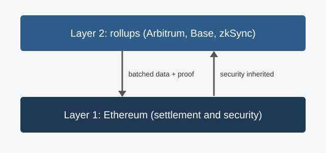

Smart Contracts, Layer 1 and Layer 2: How Blockchains Run Programs and Scale
Abstract
Smart contracts are programs stored on a blockchain that run exactly as written, with no middleman. Base blockchains (Layer 1) such as Ethereum execute these contracts and keep them secure, but they can only process so many transactions. Layer 2 networks, mostly rollups, move most of the work off the main chain while still relying on it for security. This site explains what smart contracts are, how Layer 1 and Layer 2 differ, and why the split matters for cost, speed, and trust.
Key Terms
Smart contract Layer 1 Layer 2 Rollup Gas fee Consensus Scalability Decentralization

Table of Contents
- Smart Contracts: what they are and how they work
- Layer 1 Blockchains: Ethereum, Solana, and the scaling tradeoff
- Layer 2 Solutions: rollups, optimistic vs. zero-knowledge
- Key Concepts: seven ideas to know
- References and Resources: sources and where to keep learning
- About: the author and this project